Updates from the workshop, straight off the bench.
2026-07-15 IN THE NEXT BUILD
ELEVEN CARDS NOW WEAR THE MOLTEN GOLD
We sat down with all 128 cards and a pot of coffee and audited the lot —
every stat, every price, every card that quietly won more runs than it had
any right to. The verdict: some cards were rare in name only. They were
run-warping, and pretending otherwise was bad manners. So the binder gets a
fourth rank: EPIC, in a molten-gold frame you can spot
across the room.
Eleven cards wear it. A few are old troublemakers finally given the rank
they'd earned — Juggernaut was never really a rare, ask
anyone it shunted. The rest are brand new and built to bend a run:
Hero Fuel is one glorious one-shot straight out of a
last-lap movie, Last Shall Be First gets faster for every
car ahead of you, and Cursed Trophy hands you +1.5 to all
five stats and then bills you a Dent for every crash. Read that one twice
before you draft it.
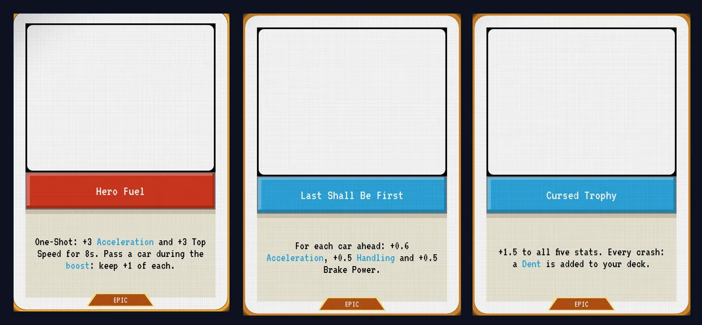
The gold frame means the run bends around it. The small print means read the small print.
They're kept honest by scarcity — roughly three offers in a hundred come up
gold — and by the audit that travelled with them: brake cards now scale into
something you'd actually build around, junk Dents can be turned into a
payoff if you lean in, and engines are single-use per race, so the slow-cooker
builds commit instead of coasting.
The card binder has been re-rendered from the build —
all 128 cards, new gold section included, every rules text current.
Small print: a few cards retired or changed names in the
audit — pour one out for Museum Piece — and a handful of old rares were
promoted to gold rather than nerfed. The gold is new; the floor under it
isn't.
2026-07-15 IN THE NEXT BUILD
THE TRACK REMEMBERS EVERY CRASH
Crashes used to be fireworks: a bang, a tumble, and thirty seconds later the
circuit looked like nothing had ever happened. That amnesia is cured. A car
that goes off now writes it into the world — rubber laid
down where the braking lost the argument, a scar gouged through whatever it
ploughed into (grass, sand, snow — the ground keeps the receipt), and it all
stays there for the rest of the race.
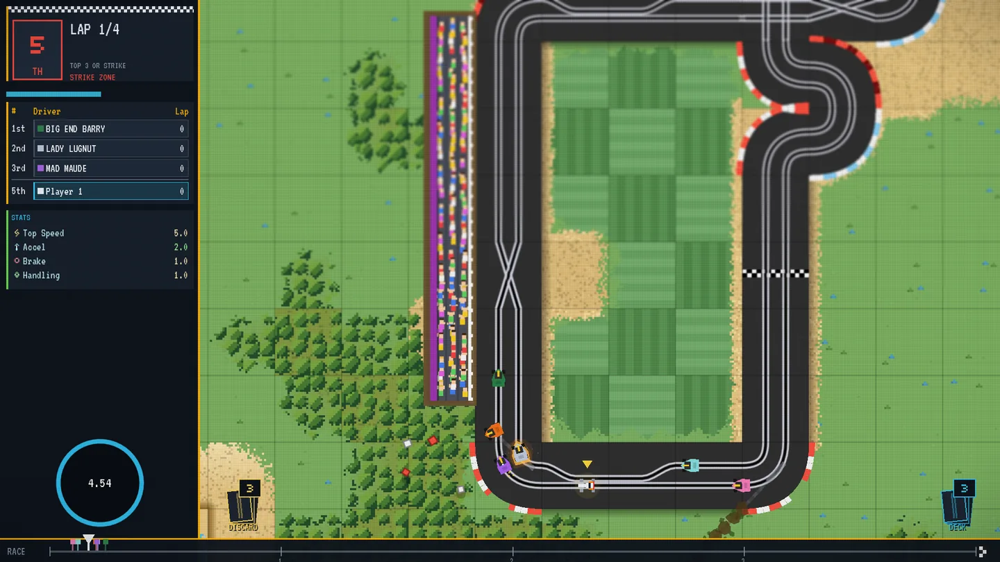
Lap 1 of 4. The corner already has a history.
The kerbs joined in too. Hit one hard enough and its painted cubes
break loose and fly — biased forward, so they scatter onto
the racing line instead of politely leaving the scene. They bounce off cars
mid-flight, skitter, settle, and lie there for the rest of the race as
evidence.
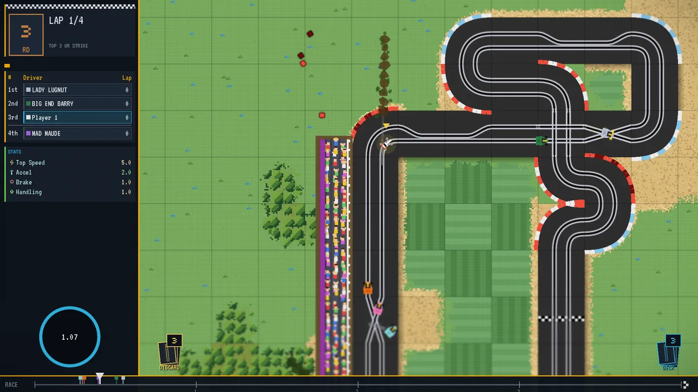
Those red squares on the grass were a kerb this morning.
Why bother? Because a race is a story, and stories need scenery that
remembers. By lap four a hard-fought circuit looks hard-fought — you can
read where the field kept binning it, and whose fault the mess probably
was. (Statistically: yours.)
Small print: the wreckage is a witness, not a hazard —
skid marks, scars and loose cubes don't slow, damage or steer anyone. The
crash rules themselves are unchanged.
2026-07-15 IN THE NEXT BUILD
THE FIELD DRAFTS FOR REAL NOW
Confession time: until recently, the rivals were stat lines with faces.
Convincing faces! But while you were agonising over a mid-corner draft,
they were just... driving. That's over. Every rival now races with a
real deck of the same cards you use, and drafts from it
mid-race, exactly like you do.
Each personality drafts to its own lane — the bruisers stack shunts and
plating, the showmen chase money into horsepower, the engineers slow-cook
an engine and wait. And the golden rule that makes it all matter:
no stat cheats. Nobody gets an invisible bonus. If Nitro
Nigel blasts past you on the back straight, it's because he drafted for
it, and you can watch him do it on the pit board.
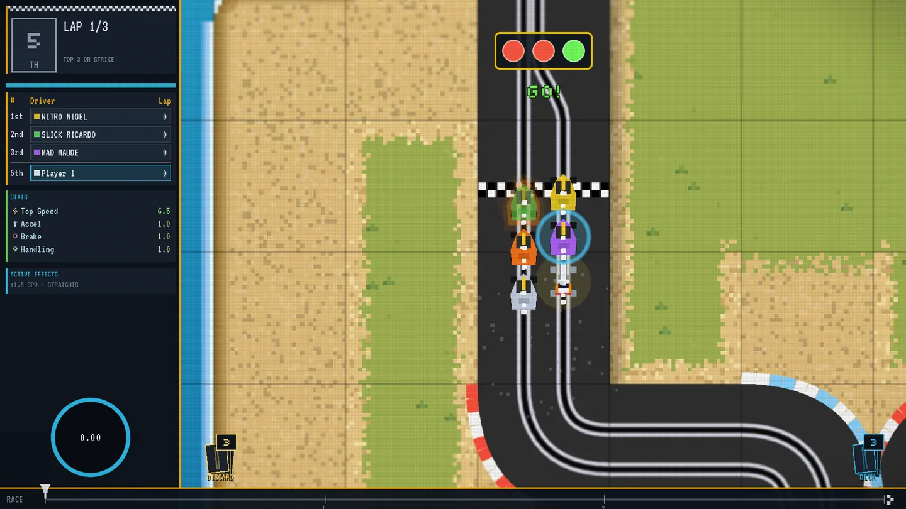
Everyone on this grid brought a deck. Only one of them read the audit post.
The first playtest of it was educational: an honest field is a
polite field, and the racing went flat. So the drafting got
pace-hungry, everyone keeps their racing fundamentals sharp, and
back-markers get a tow from the pack's slipstream so they rejoin the fight
instead of touring. That slipstream is the one helping hand in the whole
system, it only works on the stragglers, and we're saying so out loud.
The legends needed the opposite treatment. With real decks in hand,
Diesel Dan went from boss to natural disaster — one tester's notes just
said "impossible, laps everybody." He now starts his deck a
little warmer the deeper the cup, but his top end has a ceiling. He hits
like a freight train; he no longer outruns one.
Small print: rival decks draw from the same card pool and
the same rules engine as yours. The only thing they can't do is visit the
shop between races. They're saving up for something.
2026-07-15 IN THE NEXT BUILD
LIGHTS OUT, AND AWAY WE GO
Races used to begin the way spreadsheets begin: everything just
started existing. Now there's a proper ceremony. A light
gantry drops in over the start line, the camera punches down
onto the grid — the actual grid, not the vague middle of the circuit —
and you get a close-up of the field revving and twitching before the
reds count down and the green sets everyone loose.
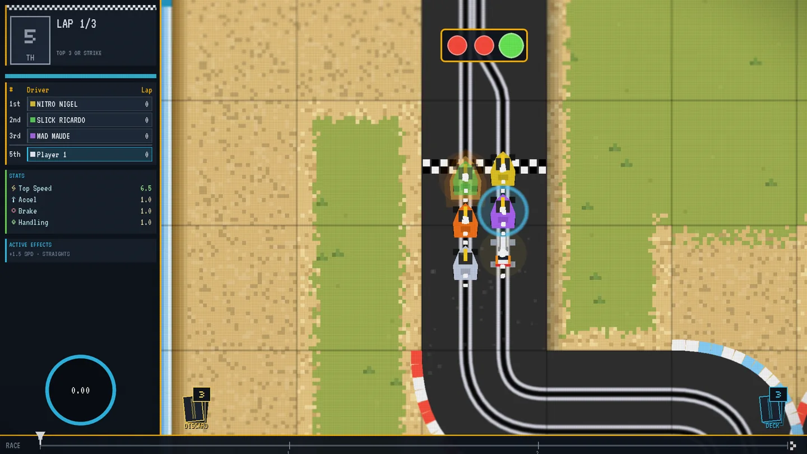
Two reds, one green, five liars promising a clean first corner.
Cups now end with the same sense of occasion. Clear one and the field
doesn't teleport to the next country — the convoy drives out,
east, off the map you just conquered and on toward the next one, no loading
screen, no curtain. The world you raced through is the world you leave
through.
Small print: the racing between the green light and the
chequered flag is untouched. We only dressed the doorway in and the road
out.
2026-07-15 IN THE NEXT BUILD
THE MECHANIC TAKES WALK-INS
There's a new stop on the map, between the shop's price tags and the
mystery stop's dice: the Mechanic. She takes one look at
your deck, wipes her hands on a rag, and offers one free
tune-up — pick a card, and she'll make it sing.
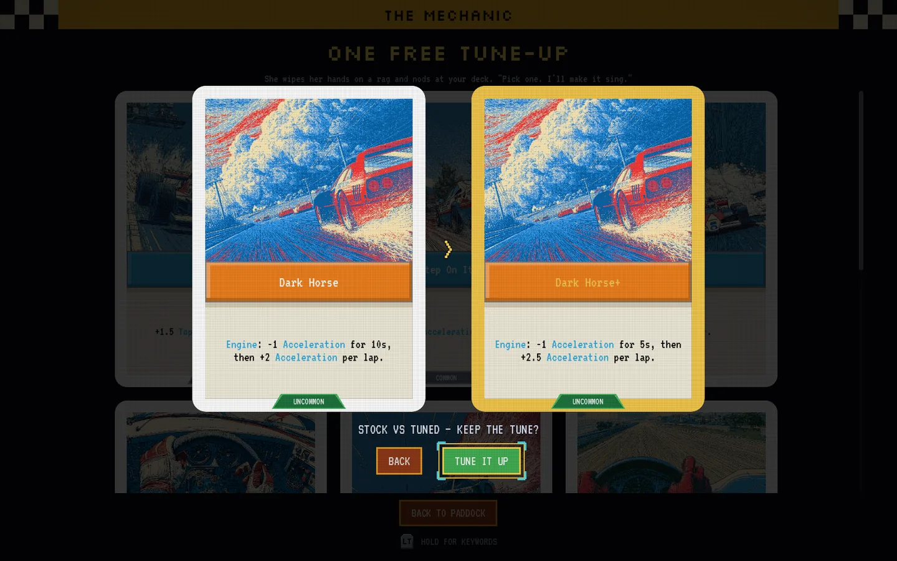
Same card, better manners. The plus is doing a lot of work.
The pitch is honest because the interface is: your whole deck is laid out
as real cards, and the tune-up shows stock and tuned side
by side before you commit. No riddles — the sharper numbers are printed on
the card. Tuned cards keep the upgrade for the rest of the run and wear a
gold title so you can spot your good decisions mid-draft.
It works start to finish on a controller, keyword help included — hold the
trigger and the jargon explains itself next to the card, same as
everywhere else.
Small print: one tune-up per visit, and upgrades last the
run. The tuned twins are hand-balanced, not formula-generated — every plus
earned its plus.
2026-07-15 BACKTRACK
BACKTRACK: DRAW A LOOP, PRESS GO
Some things shipped while the diary wasn't looking. This series catches
up. First offender: the Track Builder, sitting right
there on the main menu.
It's exactly what it says. You draw a loop — freehand track brush, plus
stamps for hairpins, sweeps, squeezes and crossovers — on a living map
that already has coastline, rivers and forest on it. Pick a biome,
let the scenery grow in on its own (or reroll it until the lake sits
where you want), name the thing, save it.
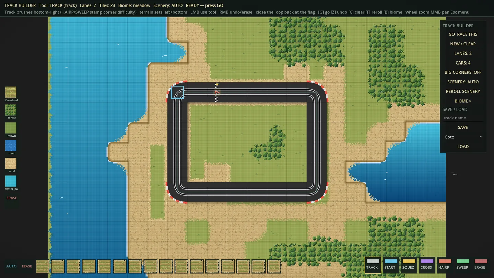
Every good circuit starts as a rectangle with ambitions.
Then the button that matters: GO — RACE THIS. Your
circuit runs through the same track rules as every campaign course, a
real grid shows up, and the loop you doodled two minutes ago has a
racing line, a strike zone and opinions about your brake stat.
Small print: builder tracks are a practice playground —
no purse, no strikes, no grudges. The feud stays on the calendar.
2026-07-15 IN THE NEXT BUILD
SOME ENGINES SHOULD STAY UNDER THE TARP.
Mystery stops had a habit of taking your money and handing back a shrug — pay the toll, watch the purse shrink, drive on feeling like you picked the wrong road. That's gone. Every paid choice now pays something back: the tollbooth attendant's receipt has thirty years of corner notes scribbled on it, and the repo men will haul away any card you like once the debts are square. Consider it customer service.
And then there's the new shelf. Two events now deal cursed hardware — parts that are genuinely, worryingly good and never stop charging interest. The Cursed Engine adds top speed every lap while eating a little brake power every lap. The Banshee Turbine snowballs your launch while the whole car shakes. The Dead Man's Anchor refuses to crash and refuses to hurry. Bolt one in and your next ten races bend around it — suddenly the shield and feather cards you always skipped look like survival equipment.
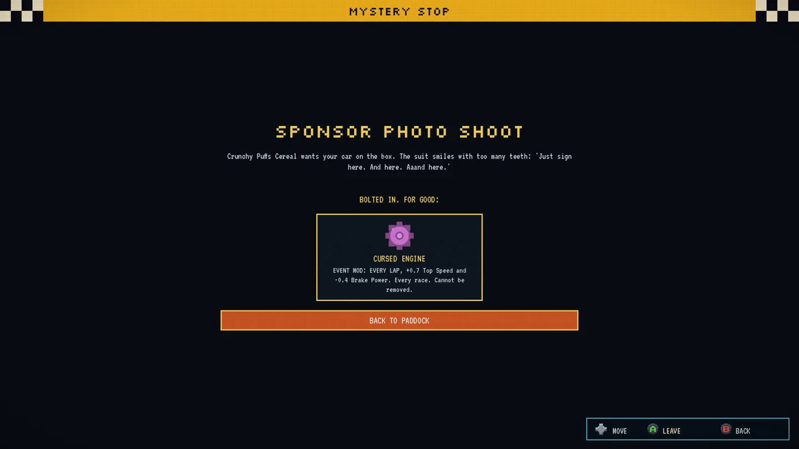
The seller wouldn't touch it. The seller was on to something.
The event screens also finally answer to a pad. The first choice you can afford lights up when you arrive, the D-pad or stick walks every button — including the take-a-card spreads and the card pickers — and once the dust settles, A or B takes you back to the paddock. Three-way choices keep their X/Y/B quick picks.
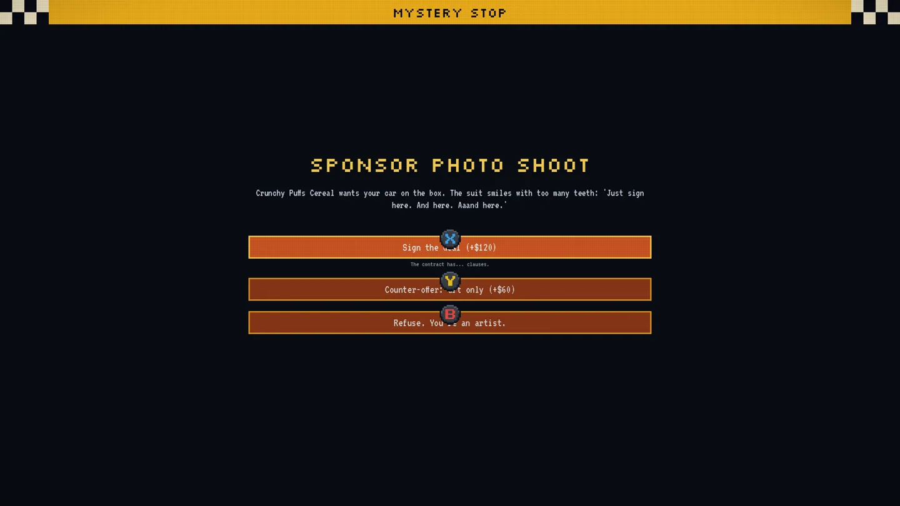
The suit accepts all major face buttons.
Two more notes from the same pass. On the world map, the glowing route used to retract in polite little bites a half-step behind your car; it now reels in like a fishing line, disappearing exactly under your wheels. And the cup showdown has stopped announcing the boss in text — their face on the card was already doing the talking.
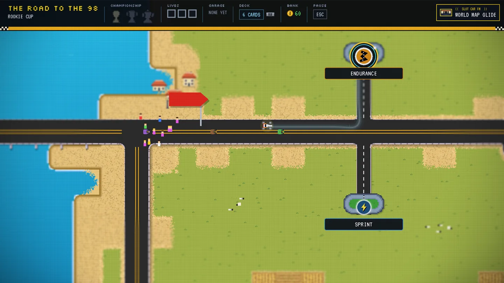
The beam now ends where the car begins. Cartography is thrilled.
Small print: the five original event mods, event odds, and race rules are unchanged. Cursed hardware is event-only, never sold in shops, and — like all mods — never, ever comes back off.
2026-07-14 IN THE NEXT BUILD
CALM HANDS. RISING PRESSURE. CARDS EVERYWHERE.
Our draft clock used to tighten by counting laps and, later, by repeatedly multiplying itself. That made a short sprint wait too long for the drama, an endurance race become exhausting halfway through, and a one-lap marathon miss the crescendo entirely. The clock was reading the format instead of reading the race.
Now the leader pulls the whole field through one shared pressure curve. The opening quarter leaves room to read the circuit and the hand. The middle steadily shortens the gap. The final ten percent becomes the card-flinging finish it was always trying to be — whether the flag is one lap away or seven.
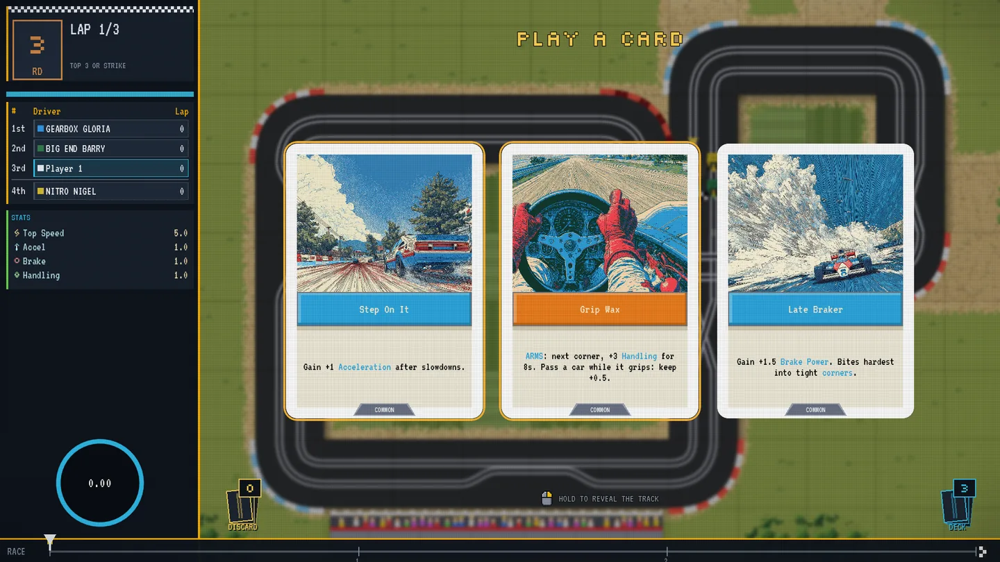
The cars are still moving. They have simply agreed to do it very, very quietly while you read Grip Wax.
We also repaired the slow-motion itself. A recent loading change let the race spring back to full speed in the tiny gap before the cards appeared. Drafting once again starts at one-fifth speed and settles toward an almost frozen crawl, giving the choice weight without hard-pausing the circuit.
The final interval has a firm six-second floor: urgent, not unreadable. Race length, race type and pit-crew hardware still decide roughly how many opportunities arrive; progress only shapes when the pressure builds. The workshop DRAFT SPIRAL control remains connected for live tuning, but it now strengthens a bounded race curve instead of creating an endless multiplication table.
Small print: card effects, offer size, deck cycling and post-race rewards are unchanged. Nobody has confiscated your right to stare at the middle card until the pit wall panics.
2026-07-13 IN THE NEXT BUILD
THE SPONSOR SIGNS. THE WORLD OPENS.
The signing gift used to finish with a polite stamp and then leave a stack of instructions taped across the top of the country. We have promoted the chosen hardware to a proper flash-and-punch reward moment, then moved the season briefing to one clean card that waits until your car reaches home.
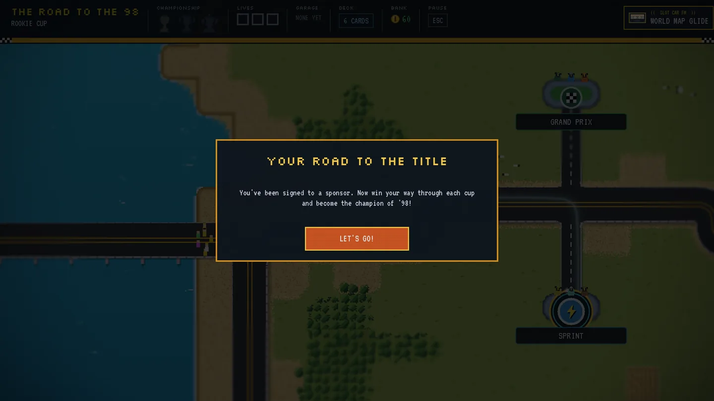
One contract, three cups, and no laminated D-pad instructions nailed to the scenery.
Press LET'S GO and the map gets out of the way. The glowing route now vanishes behind the car as it drives — shops and roadside events included — while bridge legs only hang below horizontal roads and carry a small shadow into the water. The later cups also keep painting all the way to the far gate now; their third and fourth countries had been waiting for an old two-country camera crew.
Each cup has its own road trip with no repeats. Rookie keeps the familiar meadow and lakeside. Turbo climbs through snow, mountains and neon. Champion starts in the desert, passes the volcano, reaches town and takes one extremely questionable detour through SPECTRAL.
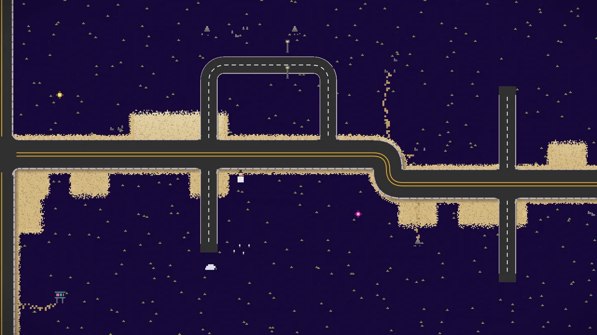
Road maintenance assures us the violet void is load-bearing.
Race damage has had a rules tidy too. Dents still jam the live deck immediately, but the pit crew knocks them out after the race instead of carrying yesterday's crash forever. Cards whose effect already lasts to the flag can now carry EXHAUST: play the copy once, remove it from this race's piles, and get it back next race. Phantom Finish is first through that door.
The title crossroad has become an honest crossroad as well: lighter traffic runs both horizontally and vertically beneath the yellow crash wash. If two cars actually meet, they spin out like everyone else instead of pretending they are decorative.
Small print: permanent card tuning, ordinary card cycling, cup prizes and race difficulty are unchanged. Spectral is a new destination, not a fourth cup.
2026-07-13 IN THE NEXT BUILD
MOON FROG, THEN MAYHEM
The cabinet used to wake up halfway through its own lap. The track arrived first, one car took the scenic route around a corner, and a cold scenery build could turn that big entrance into a small judder. It needed a proper studio card and a much worse driving decision.
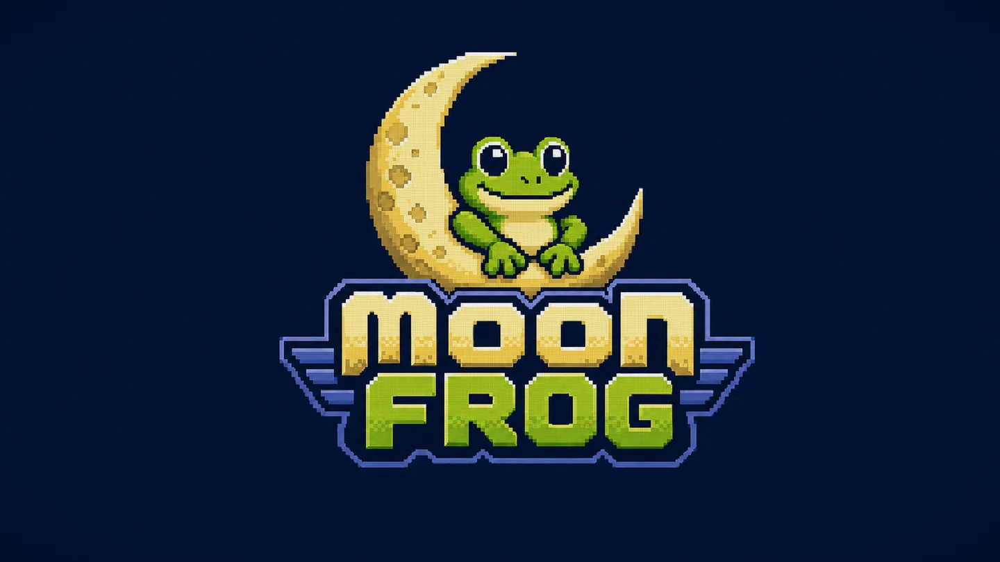
The frog has checked the moon, the plugs and at least one suspicious fuse. We may proceed.
Now Moon Frog fades up from black on a deep navy card while the opening is prepared behind it. The card only begins its long dissolve when the real track is ready and already moving, so the studio mark melts directly into the first race shot instead of handing us a black frame.
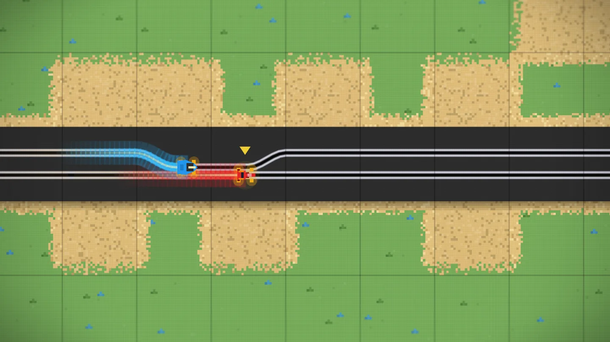
Two lanes, two hot motors and exactly one shared belief that the crossroad will probably be fine.
The new opening holds a much tighter shot on two cars tearing door-to-door across a straight more than four times longer than the first attempt. Hot wheel glow and coloured trails now sell proper 15-speed-plus pace, the miniature lens bites harder, and the pair briefly stagger themselves through the squeeze and crossover instead of attempting to occupy the same six centimetres of road. Then a third car appears on the north rail with impeccable timing and no apparent brakes.
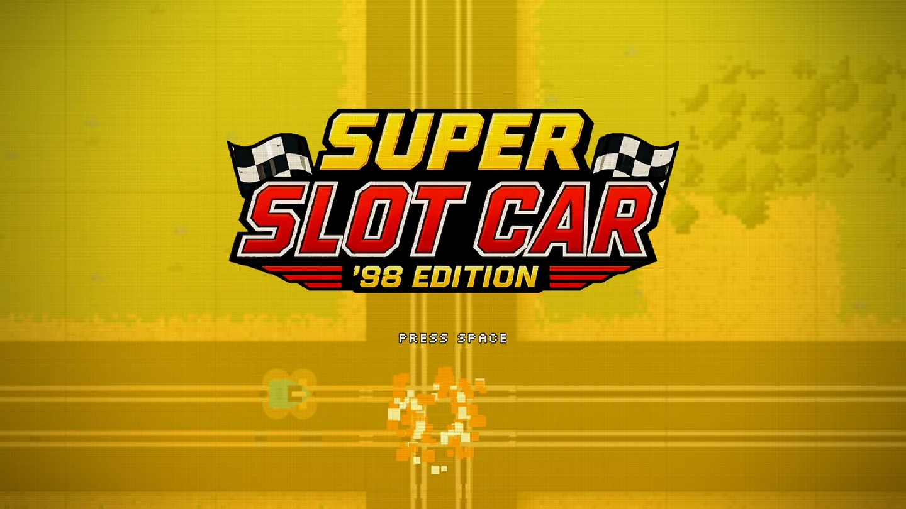
The race has been paused at the exact moment everyone involved begins updating their insurance details.
Impact now lands with the full boom, collision crack and screaming tyres. The world drops into the real yellow takedown flood and all three cars keep spinning in deep slow motion — without painting permanent dirt skids over the title card. The logo settles over the wreck with PRESS START while lighter crossroad traffic keeps moving horizontally and vertically beneath the yellow. Same-lane catches and genuine crossroad meetings become proper spinning fly-offs instead of cars ghosting through each other.
We also cleared the duplicate name and instructions off the menu's top-left corner, and stopped Tile Studio or Settings from stretching the panel whenever they gain focus.
Small print: every menu destination and every actual race rule is unchanged. The pile-up is a title-screen stunt performed by trained six-centimetre professionals.
2026-07-13 IN THE NEXT BUILD
FREEZE THE RACE. MOVE THE CAMERA.
The miniature controls were technically live, but the race was not especially interested in holding still while you used them. Cars carried on with their afternoon, drafts could arrive over the sliders, and the pause menu sat across the very picture you were trying to tune.
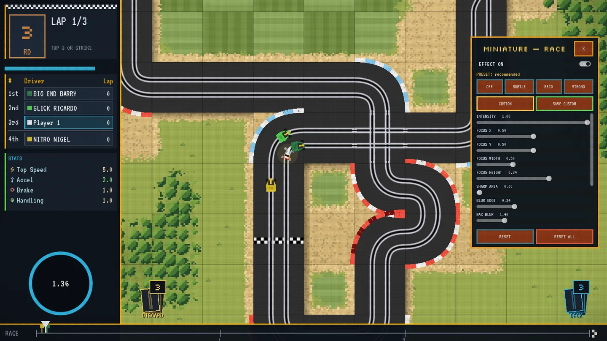
The cars have been asked to remain exactly where they are while we adjust the tiny expensive camera.
Now MINIATURE FX opens a proper inspection bench. The race, its timers and any incoming card draft are frozen solid; the ordinary pause card gets out of the way; and every slider lands directly on the live race picture. Right-drag the circuit, roll the wheel to zoom around the pointer, or use the right stick and triggers from the sofa.
The sharp area is also bolted to the player's car now. Focus X and Y set an offset around the car rather than a fixed patch of television glass, so the miniature lens follows through corners, camera moves and zooms instead of leaving the driver to wander into the fuzzy scenery.
Close the tuning card and the camera returns to its racing position, but the game stays paused. Only RESUME puts the cars back to work. We have also retired the ancient emergency world map: if the living country ever fails to initialise, the game says so and offers a retry instead of quietly opening the museum exhibit.
Small print: no race rules, car speeds, draft timing or miniature presets changed. This is the same effect and the same race, now willing to sit for a photograph.
2026-07-10 IN THE NEXT BUILD
THE COUNTRY GETS THERE BEFORE YOU DO
The road map had developed an unfortunate habit of keeping the checker curtain shut while the whole country found its trousers. Pressing START should feel like pressing START, not submitting a planning application for a forest.
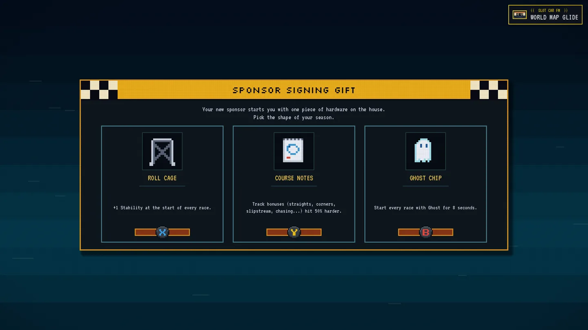
The sponsor has paperwork. The countryside is getting dressed behind the ocean.
Now the signing gift arrives with the transition, before the world map even exists. Behind it is an extremely cheap ocean cover made from a few flat blue bands and foam streaks, so the first frame is immediate and there is no half-built country showing through a blur. On the next frame the real starting coast begins preparing completely out of sight.
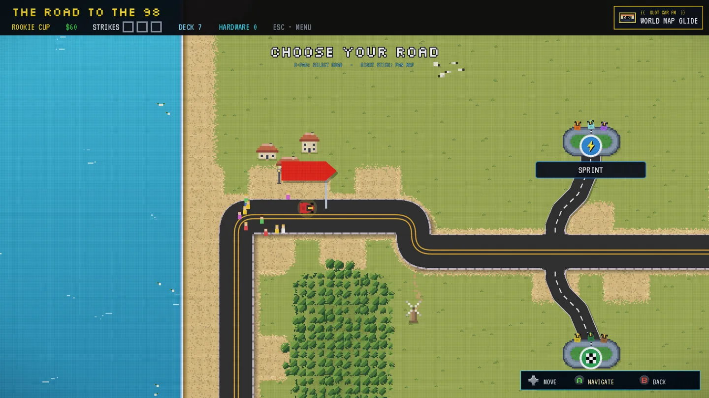
Signed, stamped, scenery present. Now pick a road and make the sponsor nervous.
Signing pulls the whole contract-and-ocean scene down like a stage curtain, revealing the prepared starting coast at full detail. Moving the camera still calls the next screenful to the bench first, and trips to a race, shop or suspicious roadside question mark keep the same country warm for the return journey. Mouse players get clean cards with ordinary hover-and-click selection; the X/Y/B badges only appear after controller input takes over.
Small print: no loading screen, no blurry pop-in, no shorter map, no lower-resolution terrain and no missing decorations. This is the same world, arriving in a much more useful order.
2026-07-10 IN THE NEXT BUILD
EVERY CLICK GETS A CLACK
The cars already knew how to make a scene. The quieter bits around them did not. Some buttons landed like damp cardboard, a clean overtake could happen without so much as a cough, and the title-screen pile-ups were apparently taking place inside a library.
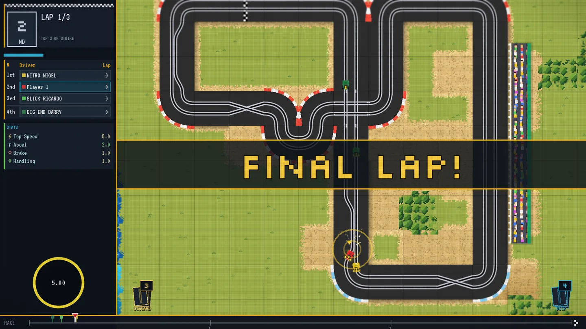
The bell says final lap. The little gold car says this seemed like a safer idea in the garage.
Now the whole cabinet speaks the same crunchy arcade language: focus ticks, button clacks, back blips and a proper unhappy thunk when the till says no. A successful buy flashes the card white, throws its exact cost straight off the shelf and answers with one cheerful rising sparkle. The garage, deck and reference screens also keep the radio with them instead of wandering off into silence.
On track, passes chirp, crossovers snap, shields ring, boosts spool up and the last lap gets a bright arcade chirp instead of a funeral bell. A picked card flashes white in the click frame before it flies, while the matching streaks and checker bursts stay short and directional so they point at what happened without papering over the racing line.
Small print: no new songs and no extra pauses. The cars, cards and race rules are unchanged; they have simply stopped being shy about what they are doing.
2026-07-10 IN THE NEXT BUILD
THE CONTROLLER GETS A PIT PASS
We were pretending a controller could get around the garage. It could, technically. In practice, the Pit Shop was a wall of lovely things with no clear answer to the most important question: which shiny thing am I about to buy?
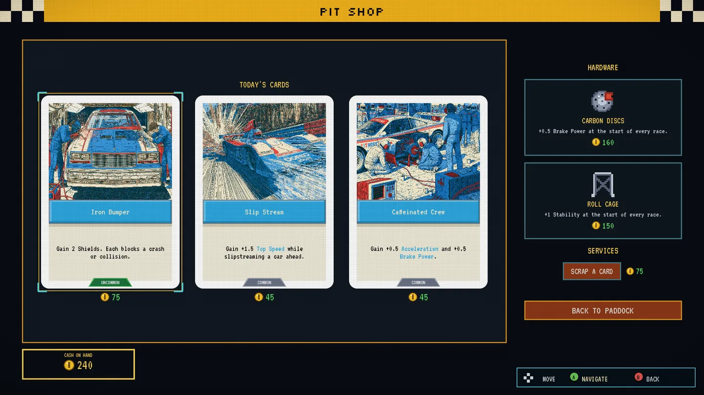
There. That one. The card with the dangerous optimism and the price tag.
Now the D-pad walks across every card, hardware tile, the scrap desk and the exit, with an animated corner frame bolted around the current choice. A buys it. No mouse audition required.
The same pass puts X, Y and B directly on three-way offers, gives world-map roads a proper target ring, and adds a little set of corner brackets while the right stick pans the map. During the race, the D-pad can now continue down the timing board through your stats, hardware and live effects, with a plain-English readout alongside. Start pauses; RT reveals the track during a draft and skips a post-race reward.
Small print: prices, stock and race rules have not changed. We have only removed the part where your thumbs had to ask permission from your mouse.
2026-07-09 IN THE NEXT BUILD
THE JOB IS ON THE BOARD
Before the lights, a normal race used to shout a vague little welcome in the same oversized type as GO. It had plenty of volume and not much information.
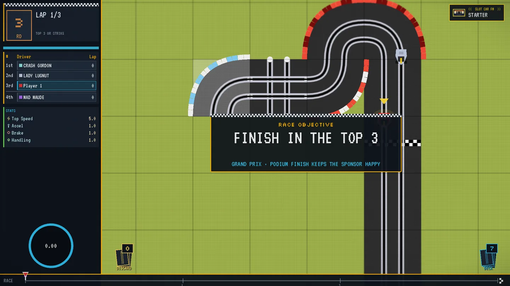
Less ‘some sort of event is happening’; more ‘get on the podium’.
The new pit board says exactly what is at stake: FINISH IN THE TOP 3, plus the race type underneath. It is deliberately calmer than the start lights, easy to read at a glance, and clears off before the launch.
Showdowns and grudge matches have kept their rival posters. Those are personal. This board is for the business of getting paid.
Small print: the objective and strike rules have not changed — only the way the game tells you about them.
2026-07-09 IN THE NEXT BUILD
THE TILL STOPS HIDING
The Pit Shop had the money up in its letterhead. Technically visible,
sure. But when you were looking from a rare card to a suspiciously
expensive bit of hardware, the number had to be found again every time.
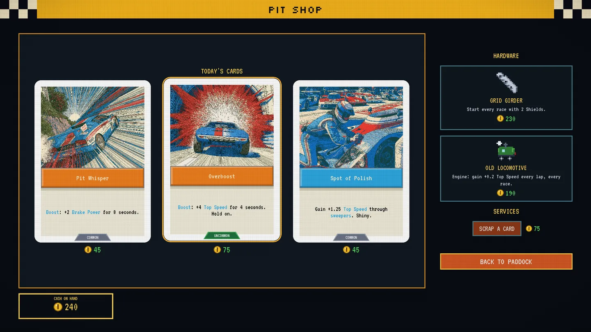
The new counter has one job: tell us whether we can afford that shiny thing before we start making excuses.
So cash has its own proper till now: a dark little counter with a gold
border, a clear CASH ON HAND label and a big coin-and-number readout.
It sits beside the stock instead of pretending to be part of the sign
over the door.
And when we buy, it pays us back in the only currency that matters:
feedback. The total counts down, the till gives a quick
mechanical dip, and the exact cost drops away underneath in red. A card
leaving the shelf is no longer the only clue that our wallet just got
lighter.
The small print: prices, stock, discounts and the amount of cash in a
run have not changed. The till is just finally doing its job loudly
enough to hear over the garage.
2026-07-09 IN THE NEXT BUILD
FOUR BUTTONS, TWO OF THEM LIES
Click a race on the map and a card slides up to introduce it: the crew
you'd be lining up against, the one thing you have to do to walk away
clean, what's in it for you, and the only question that matters —
want to race?
Trouble was, the card offered you four things that looked pressable and
only two of them were. The rewards — the card you'd win, the purse
— sat in the same bordered frames as the actual buttons. So there
they were, NEW CARD and PURSE, quietly inviting a click that did nothing.
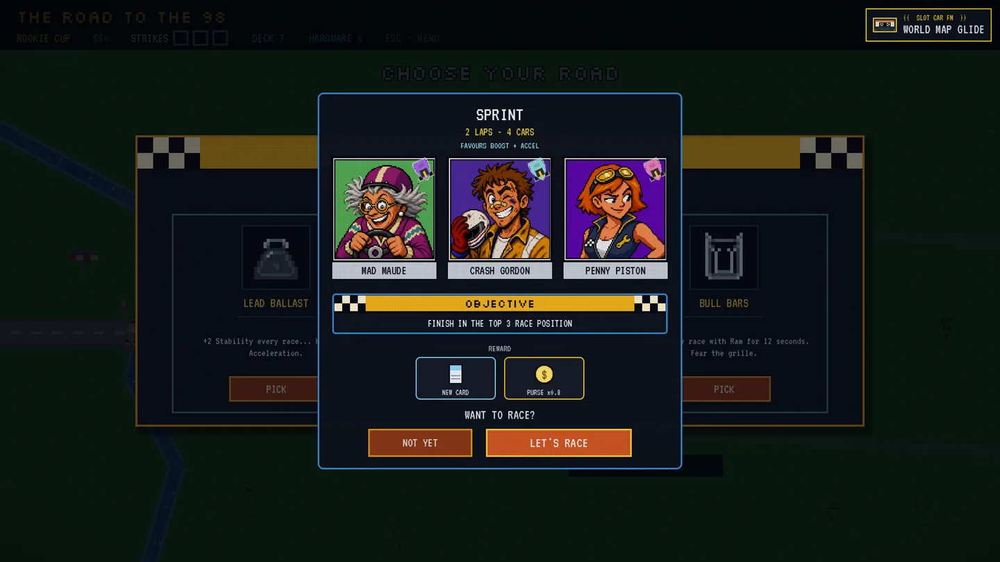
Before. Two buttons, and two things doing a very good impression of buttons. NEW CARD is not clickable. It looked clickable.
So the rewards lost their borders. They're flat little pads now, a shade
lighter than the card behind them — itemised, so you can still tell
one prize from the next, but plainly a list of what's on offer
rather than a row of choices. And the two things you actually can press
finally look the part: NOT YET stays in the usual pit-lane orange, and
LET'S RACE turns go-green. Same size, side by side, so
neither one shouts over the other.
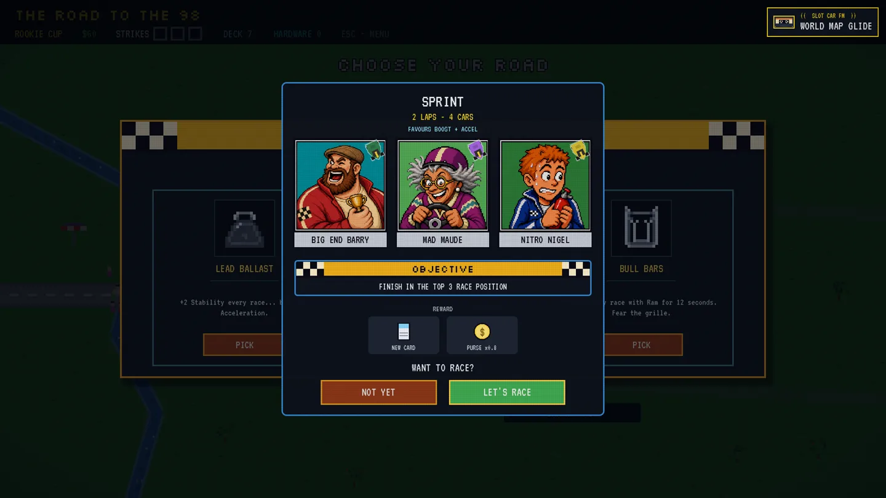
After. The rewards lie flat where they belong; the only two things you can press look like the only two things you can press. Green means go.
Then we gave the whole moment some juice. The card no
longer just appears — it fades up and pops into place, like it
arrived rather than blinked on. And saying yes is now an event of its
own: LET'S RACE flashes and chirps to tell you the click landed, the
entire card drops off the bottom of the screen, and only then
does your car pull away down the road.
That extra beat isn't only for show. While the card is dropping, the
race track is already loading in the background — so by the time
the car reaches the start line, the wipe cuts to a grid that's ready and
waiting instead of a half-second of held breath.
The small print: the races, the rivals and the rewards themselves are
exactly as they were. This was a pass on the asking —
which things you can touch, and what it feels like to say yes —
not on what you're being asked.
2026-07-08 IN THE NEXT BUILD
THE PIT BOARD LEARNS TO POINT
Shove a rival hard enough and the paddock notices. The pit board slides
up along the bottom of the screen with the offended party's face on it
and a line about how their patience is doing. It's the game's gossip
column, and it does a job no lap counter can: it turns a car into a
person who now has a problem with you.
Which made it awkward that you could barely see the face, and had no
idea which car it belonged to.
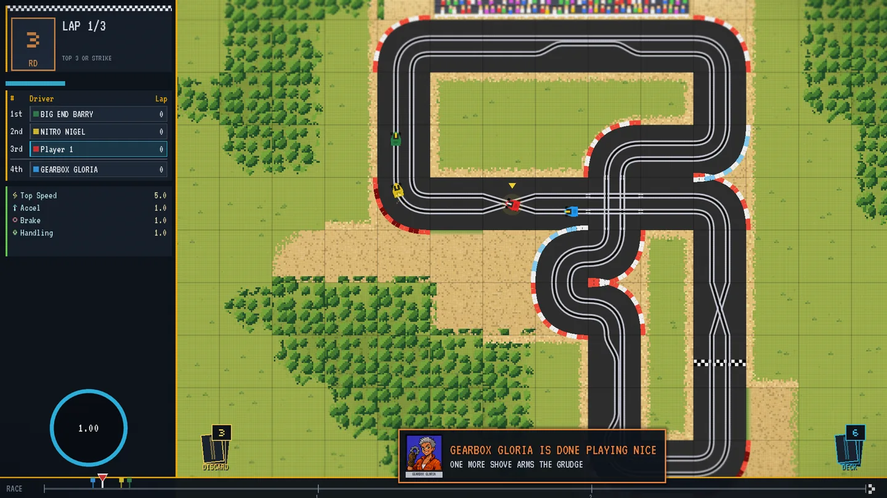
Before. Gearbox Gloria is done playing nice. Gearbox Gloria is one of those four. Good luck.
So the board grew up. The mugshot is nearly twice the size
— big enough to actually learn a face from, which matters when
that face is going to come looking for you on the map two races from
now — and the headline is set large enough to read from the sofa.
Same three and a half seconds on screen; a great deal more information
arriving in them.
And the board now points. A shaft of light drops out of
nowhere onto the car in question and stays with it — through the
hairpin, through traffic, for as long as the message is up — lit
in the same colour as the board's own border, so there's never a
question of which headline is pointing at what. Turns out the fastest
way to introduce somebody is to shine a light on them.
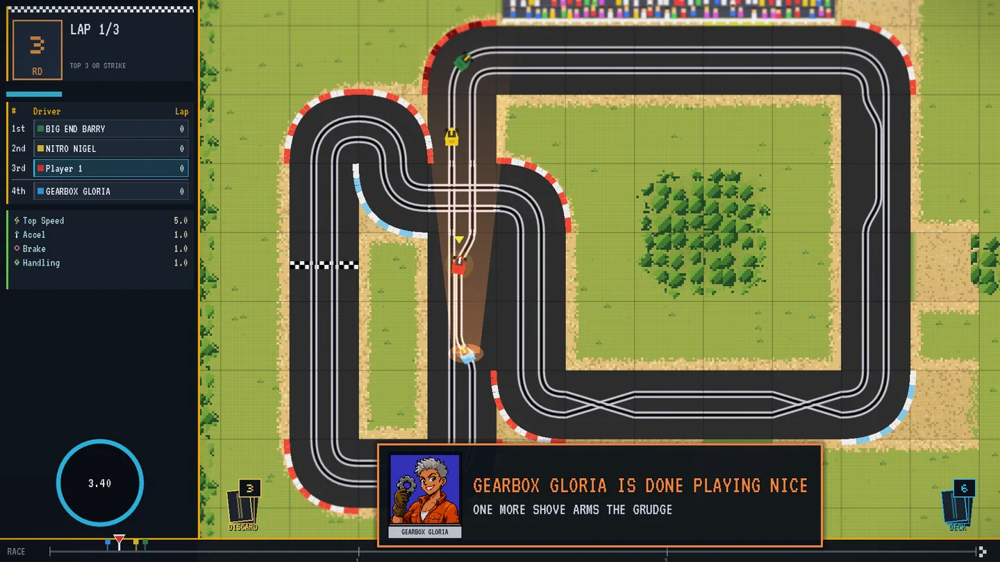
After. The blue one. She's in fourth, she's furious, and she's about to be your problem.
Every bulletin the board carries gets the beam: the grudge starting to
simmer, the grudge boiling over into a challenge, and the moment
somebody gets sabotaged in the pit lane. Red for the boil-over, amber
for the rest, matching the border on the board.
The small print: nothing about the grudges themselves changed. Same
shoves, same tempers, same nemesis waiting for you on the map. This was
a pass on saying it louder — the paddock was already
talking, we just hadn't given it a spotlight to talk under.
2026-07-08 THE ROAD SO FAR · PT. 1
THE ROAD SO FAR, PT. 1 — THE JANUARY TOY
This is the first of a short series about how this game got here.
Everything below is read straight out of the project's own history —
real commits, real dates — and the screenshots are the actual
old builds, resurrected from version control and run again
today. No mock-ups, no memory. The archive doesn't flatter anyone,
which is rather the point.
SUPER SLOT CAR '98 began on 27 January 2026. The
second-ever commit is titled, in full, “early stuff”.
Over the next twelve days it picked up 43 commits: a track that could
detect its own gaps, a crash model, lane switching, a pause menu, and
a title screen that already knew exactly what it wanted to be.
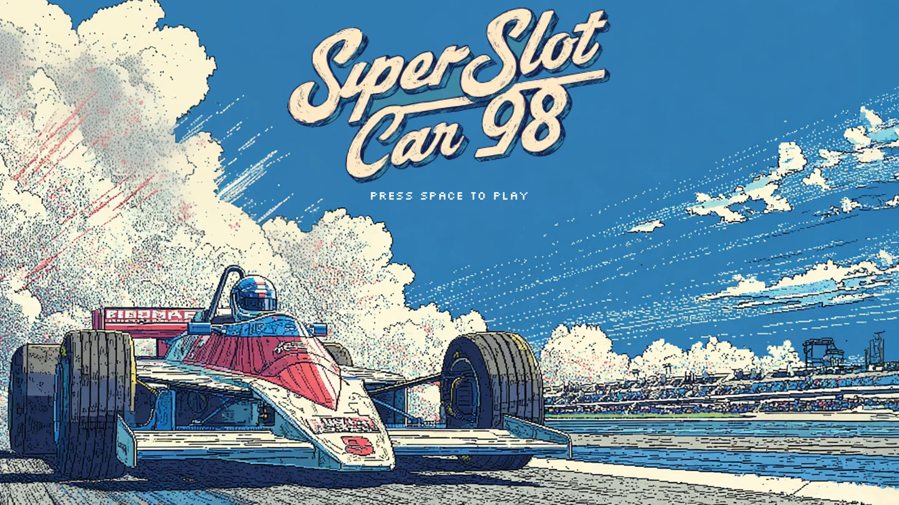
February 2026. The wordmark was painted, the promise already made. (Today's title is a live in-engine cinematic — this was a JPEG with dreams.)
The game itself was one race, four drivers, and a lawn the colour of
a snooker table. The pit wall shows the entire 1998-spec feature set:
a position table, four stats, and a speedo. That button in the top
corner isn't a menu — it's a debug control, shipped proudly on
screen, because in February the whole game was a workbench.
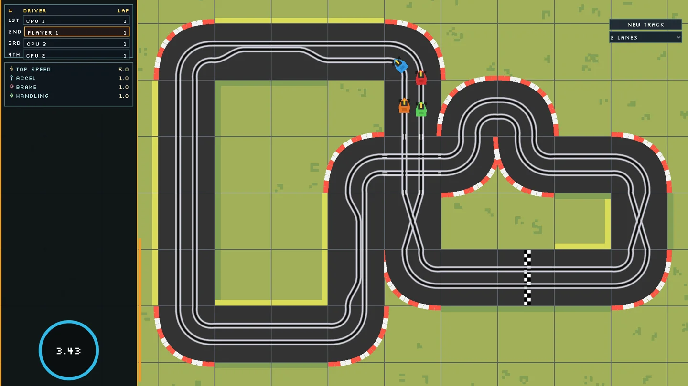
The February build, running again today. Four teardrops, one idea.
But the idea that makes this game this game was already in.
Mid-race, the action stops and the track deals you a hand.
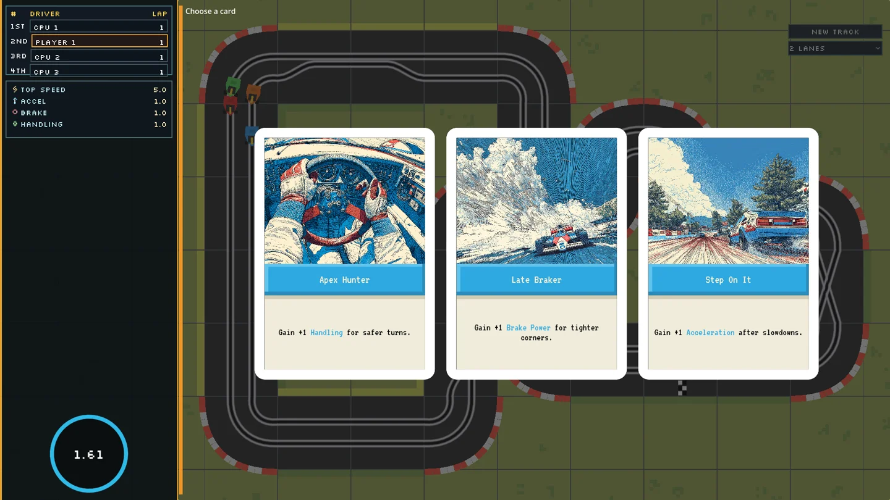
“Choose a card”, spelled out in default-font Helvetica, because juice hadn't been invented yet.
Look at that hand. Apex Hunter and
Late Braker are still in the game today — you can
find both in the card binder, reworked into
corner-trigger cards but wearing the same art. Some cards were simply
born right.
The last commit of that first burst landed on 7 February
2026. Then: nothing. No commits in March. None in April.
The repository went quiet for five months.
Part 2 is about the drawer — why a game this loved went into it, and
what finally pulled it back out.
The small print: these screenshots come from commit
849f350, checked out into a scratch worktree and run
under today's engine. The compute shaders grumbled; the game ran
anyway. They built things sturdy in '98.
2026-07-08 IN THE NEXT BUILD
THE SIGNING DESK GETS ITS LETTERHEAD
Every run opens the same way: your new sponsor slides three parts
across the desk and you keep one. It's the first decision of the
season — and until this week it looked like the last screen we ever
furnished. Three thin boxes, text huddled at the top, a PICK button
drifting somewhere below it, and a big dead nothing in between.
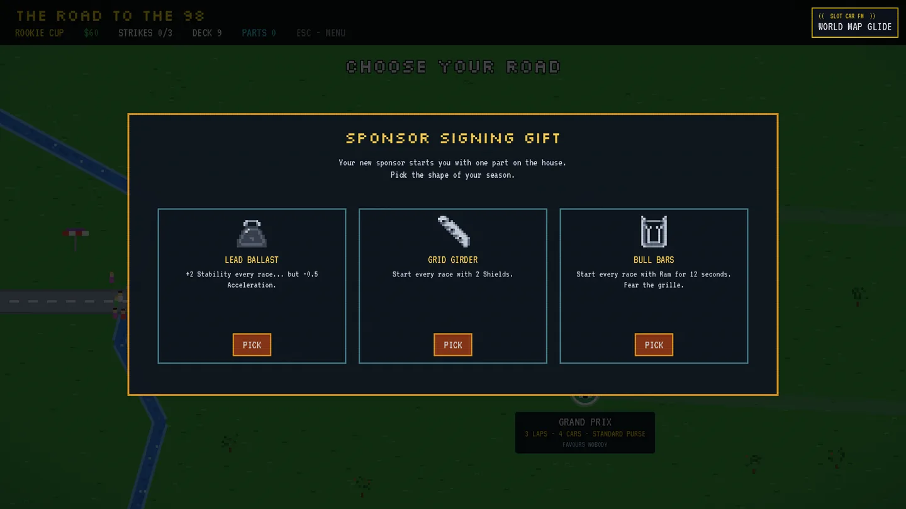
Before. The furniture said “placeholder”, the moment said “season opener”.
So the desk got the full contract treatment. The title now sits on an
amber letterhead with checkered-flag ends — the same
slab language as the site's big buttons — and the three gifts are
proper cards: each part in its own display case, name, a rule line,
and every PICK on one shared baseline no matter how long the rules
text runs. The panel throws a hard drop shadow off the dimmed map,
and the cards deal in left to right when the desk
opens.
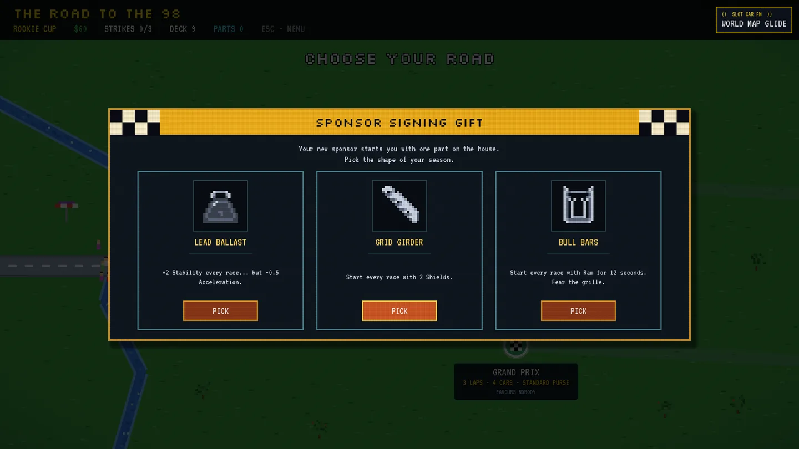
After. Same three parts, now presented like they cost somebody money.
And because signing a contract should feel like signing a contract:
hover a card and it leans forward and lights up gold. Pick it and a
red SIGNED! stamp slams across it, the two parts you
passed on fade into the shop shadows, and the desk clears away.
Keyboard and pad players are covered too — the middle card starts
focused, so Enter signs on the spot.
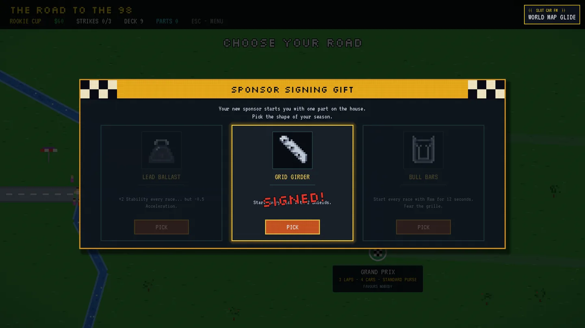
The stamp lands under the part name, so you can still read what you just signed for.
The small print: nothing about the offer changed — same three
non-trophy parts, same seed, same one free pick. This was a
furniture pass, and the furniture now matches the occasion.
2026-07-07 IN THE NEXT BUILD
THE GARAGE GROWS: TEN BODY TYPES
Until now every car on the grid wore the same body — the CLASSIC, the
pointy little sports car the game shipped with. It's not going anywhere.
But it's getting company: the garage now has a BODY TYPE
wall, and there are ten silhouettes hanging on it.
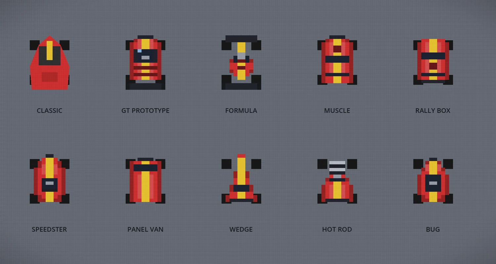
The fleet. Same footprint, ten personalities.
Every new body is built the way the rest of the game is built — a
char-grid of chunky 16-bit colour blocks, three shades per paint, no
gradients, no outlines. We tried a fancier, more detailed look first.
It looked like it wandered in from a different game, so it went in the
bin and the pixels stayed.
CLASSIC — the one you started with. Frozen forever.
GT PROTOTYPE — canopy, splitter, rear wing. Le Mans in 160 pixels.
FORMULA — needle nose, naked wheels, wings both ends.
MUSCLE — long hood, fat haunches, a scoop that gulps.
RALLY BOX — boxy, spoilered, itching for gravel.
SPEEDSTER — open cockpit, roll hoop, sixties swagger.
PANEL VAN — the team van. Yes, it races.
WEDGE — a seventies doorstop. All nose.
HOT ROD — engine out front, chrome and attitude.
BUG — round, eager, surprisingly slippery.
Picking a non-classic body opens the BODY KIT: an
accent colour for the wings, trim and bumpers, and a paint finish —
matte, gloss or metallic — done as flat pixel shade-bands, not shaders.
Stack those on top of the existing paints, stripes, patterns and wheels
and your car can get properly personal.
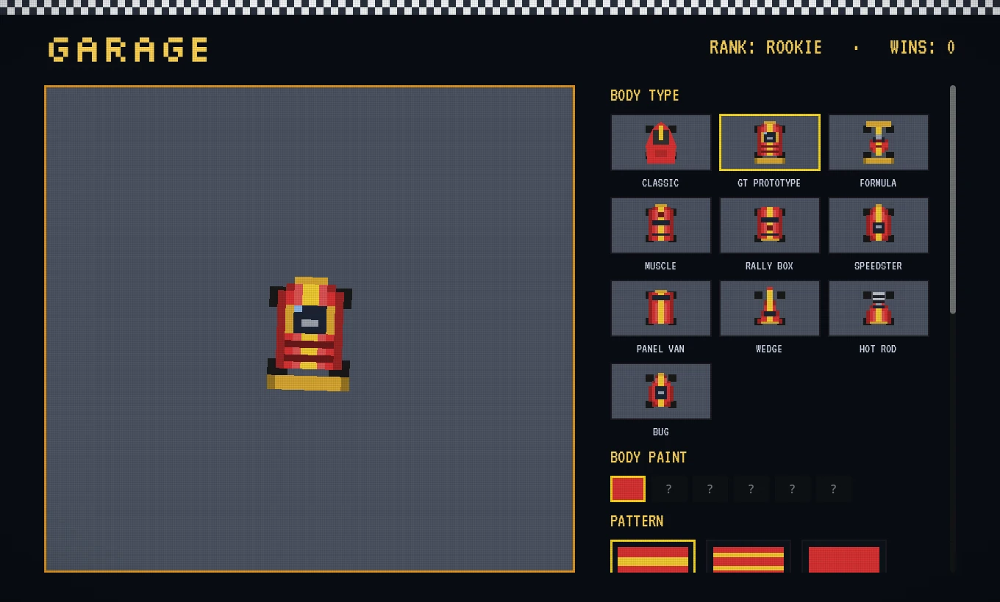
The garage got a lit showroom floor too — dark wheels finally read.
The important small print: body type is pure expression.
The hitbox is identical on every body, so the van corners exactly as
well as the wedge (make of that what you will). No stats, no unlock
grind — pick the car that feels like yours.
It's all sitting in the build now and lands with the next playtest
release. If you're already racing, the updater will offer it to you
when it ships.